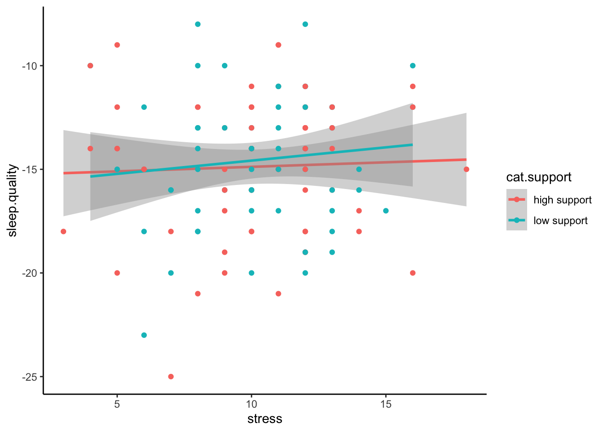

Content
Before we begin…
Remember, whenever we analyse data, we will roughly be following this procedure:
- Clean the data for analysis.
- Run the statistical test.
- Plot the data.
- Write-up analysis.
We will be using the following packages. If this is your first time using these packages, remember to install them before loading the packages - we have used all of these packages previously except for the package called psych.
library(tidyverse)
library(broom)
library(lm.beta)
library(psych)Reminder: Moderation (Interaction Effects)
As covered in the Lecture series, moderation is when the effect of an IV (predictor) on the DV (outcome) depends on another IV (predictor). We can test for an interaction effect in a linear regression.
In the example below, we will test the hypothesis that the association between anxiety about taking a statistical exam and stress is moderated by social support. We would predict that anxiety about taking a statistics exam would cause high stress, but more so for individuals who do not have good social support.
Regression with Interaction Effect
1. Clean the data for analysis.
First we must calculate the scores for each scale in the analysis from the individual items. As we have done previously, we can do this by using the mutate() function. More information about how these scales are scored can be found in the following research papers:
For more detail on the Statistic Anxiety Rating Scale (STARS), click here.
For more detail on the Perceived Social Support Scale, click here.
For more detail on the Stress Scale, click here.
data1.vars <- data %>%
mutate(stars.test = stars.1 + stars.4 + stars.8 + stars.10 + stars.13 + stars.15 + stars.21 + stars.22,
support = support.1 + support.2 + support.3 + support.4 + support.5 + support.6 + support.7 + support.8 + support.9 + support.10 + support.11 + support.12,
stress = stress.1 + stress.2 + stress.3 + stress.4 + stress.5 + stress.6 + stress.7 + stress.8 + stress.9 + stress.10) %>%
dplyr::select(student.no,stars.test,support,stress)When including interaction terms in a linear regression, including uncentered variables can be problematic. In order to center the variables, we can use the scale() function. The scale() function expects a numeric vector. There are two additional arguments called center and scale. If center is set to TRUE, but scale is set to FALSE, the scale() function will output the ‘centred’ variable. If both arguments are set to TRUE, the scale() function will return a ‘standardised’ argument.
Because of a quirk with the scale() function, we also need to tell R that the output is a vector. We can do this by piping the results from the scale() function to the as.vector() function.
You can see the scale() function in action below:
v <- c(3,32,5,6,12,59,96)
#Get the centered variable.
c.v <- scale(v,center = TRUE,scale = FALSE) %>% as.vector()
c.v## [1] -27.428571 1.571429 -25.428571 -24.428571 -18.428571 28.571429
## [7] 65.571429#Get the standardised variable.
z.v <- scale(v, center = TRUE,scale = TRUE) %>% as.vector()
z.v## [1] -0.7782022 0.0445845 -0.7214583 -0.6930863 -0.5228546 0.8106273
## [7] 1.8603896We can use this combination of the scale() and as.vector() functions within the mutate() to calculate the standardised/centred variables of columns in our data.frame:
#Compute centred variables for analysis.
data1.clean <- mutate(data1.vars,
c.stars.test = scale(stars.test,center = TRUE,scale = FALSE) %>% as.vector(),
c.support = scale(support,center = TRUE,scale = FALSE) %>% as.vector()) %>%
#Compute standardised variables.
mutate(z.stars.test = scale(stars.test,center = TRUE,scale = TRUE) %>% as.vector(),
z.support = scale(support,center = TRUE,scale = TRUE) %>% as.vector(),
z.stress = scale(stress,center = TRUE,scale = TRUE) %>% as.vector())2. Run statistical test
Recall that interaction effects are the multiplication of the two variable. Therefore, to specify an interaction, we change the formula we specify to include the multiplication of the variable whose interaction we are interested in. For the unstandardised model, make sure you include the centred variables in the formula.
#Unstandardised Model
model1 <- lm(stress ~ c.stars.test*c.support,data = data1.clean)
summary(model1)##
## Call:
## lm(formula = stress ~ c.stars.test * c.support, data = data1.clean)
##
## Residuals:
## Min 1Q Median 3Q Max
## -8.2128 -2.0827 -0.0388 1.8891 6.9207
##
## Coefficients:
## Estimate Std. Error t value Pr(>|t|)
## (Intercept) 23.798183 0.283661 83.897 < 2e-16 ***
## c.stars.test -0.010807 0.042083 -0.257 0.79782
## c.support 0.061856 0.021262 2.909 0.00439 **
## c.stars.test:c.support 0.003578 0.003150 1.136 0.25863
## ---
## Signif. codes: 0 '***' 0.001 '**' 0.01 '*' 0.05 '.' 0.1 ' ' 1
##
## Residual standard error: 3.004 on 109 degrees of freedom
## (5 observations deleted due to missingness)
## Multiple R-squared: 0.08818, Adjusted R-squared: 0.06308
## F-statistic: 3.514 on 3 and 109 DF, p-value: 0.01768Notice how R automatically includes the main effects in the model? In most cases, you will want to include the separate main effects when including an interaction term, but in the odd occassion when you want to include the interaction effect without the main effect, you can specify it using the : symbol. In other words:
stress ~ stars.test*support is identical to stress ~ stars.test + support + stars.test:support
Above are the unstandardised coefficients. However, in order to report in APA format, we require the standardised coefficient. Similar to with an ordinary regression, we can use the lm.beta() function to get the standardised coefficients, like here:
#Standardised Model
lm.beta(model1) %>% summary()##
## Call:
## lm(formula = stress ~ c.stars.test * c.support, data = data1.clean)
##
## Residuals:
## Min 1Q Median 3Q Max
## -8.2128 -2.0827 -0.0388 1.8891 6.9207
##
## Coefficients:
## Estimate Standardized Std. Error t value Pr(>|t|)
## (Intercept) 23.798183 0.000000 0.283661 83.897 < 2e-16
## c.stars.test -0.010807 -0.023892 0.042083 -0.257 0.79782
## c.support 0.061856 0.268392 0.021262 2.909 0.00439
## c.stars.test:c.support 0.003578 0.105625 0.003150 1.136 0.25863
##
## (Intercept) ***
## c.stars.test
## c.support **
## c.stars.test:c.support
## ---
## Signif. codes: 0 '***' 0.001 '**' 0.01 '*' 0.05 '.' 0.1 ' ' 1
##
## Residual standard error: 3.004 on 109 degrees of freedom
## (5 observations deleted due to missingness)
## Multiple R-squared: 0.08818, Adjusted R-squared: 0.06308
## F-statistic: 3.514 on 3 and 109 DF, p-value: 0.017683. Plot data
Interactions can often be difficult to intuit from just looking at the numbers in the model. Therefore, it is almost always necessary to plot them. The most common way to plot an interaction is to split the dataset in two according to the moderator: one with participants who score above the mean on the moderator, and the other with participants who score below the mean on the moderator. In our example, this means splitting the data into participants who are above and below the mean in social support. We can do this by creating a new variable using the ifelse() function within the mutate() function.
The ifelse() function works by first specify a condition as the first argument. The second argument is what happens if data from a participant meets that condition. The third arguement is what happens if a participant does not meet that condition. So in the code below, we are creating a new variable called ‘cat.support’. We want to categorise support into two levels, so the condition in the ifelse() function is z.support > 0. Since we standardised the moderator during the cleaning scale. The mean = 0, so we can split the data on this. Participants who meet this condition are in the “high support” group, while those that are not are in the “low support” group.
plot.data <- mutate(data1.clean,cat.support = ifelse(z.support > 0,"high support","low support")) %>%
filter(!is.na(cat.support))We then can plot the regression line adding in a ‘group’ and ‘colour’ aesthetic to separate our data of participants with high and low support.
ggplot(plot.data,mapping = aes(x = stars.test,y = stress,group = cat.support,colour = cat.support)) +
geom_smooth(method = "lm")Even better is if can visualise the raw data in a scatterplot:
ggplot(plot.data,mapping = aes(x = stars.test,y = stress,group = cat.support,colour = cat.support)) +
geom_smooth(method = "lm") +
geom_point()
4. Write-up analysis.
Given that a moderation is exactly the same as a regression, we require the same information to do the write-up. As a reminder, here are the components you need to write up a regression:
For the model, you need the following information:
- the R-squared statistic.
- the F-statistic and associated degrees of freedom.
- the p-value for the model.
For each predictor, you need the following information:
- the standardised coefficient.
- the t-statistic.
- the p-value for that coefficient.
As mentioned last week, with more than one predictor in the model, it may make more sense to report the statistics in a table. This includes models with interaction effects (in the case above, the interaction effect is our third predictor).
Here is an example of the write-up:
We used a linear regression to predict stress from the anxiety about taking a statistics test, level of social support, and the interaction between the two. We found that model explained 8.82% of the variance (F(3,109) = 3.51, p = 0.018). Regression coefficients are reported in Table 1. There was a significant, negative main effect of teaching comprehension on stress. There was no significant main effect of perceived social support on stress. The interaction between comprehension of statistics teacher and level of social support was not significant.
Table 1. Regression coefficients for linear model predicting stress.
| predictor | beta | t | p-value |
|---|---|---|---|
| Teacher Comprehension | -0.02 | 0.04 | -0.257 |
| Social Support | 0.27 | 0.02 | 2.909 |
| TC * SS | 0.11 | 0 | 1.136 |
Mediation
As covered in the Lecture series, mediation describes a relationship where the influence of one variable on another can be explained through a third variable. In the example below, we will test whether the relationship between comprehension of a statistics teacher and stress can be explained through individual’s anxiety about taking a statistics exam (i.e., individuals who find statistics teachers hard to understand increase their anxiety about taking statistics tests, which in turn increases stress).
1. Clean data for analysis.
First, we must calculate the variables that we need for our analysis. This process should be fairly familiar by now.
data2.clean <- data %>%
mutate(teacher = stars.30 + stars.32 + stars.43 + stars.44 + stars.46,
support = support.1 + support.2 + support.3 + support.4 + support.5 + support.6 + support.7 + support.8 + support.9 + support.10 + support.11 + support.12,
stress = stress.1 + stress.2 + stress.3 + stress.4 + stress.5 + stress.6 + stress.7 + stress.8 + stress.9 + stress.10,
stars.test = stars.1 + stars.4 + stars.8 + stars.10 + stars.13 + stars.15 + stars.21 + stars.22) %>%
dplyr::select(student.no,teacher,support,stars.test,stress) %>%
filter(!is.na(teacher)) %>%
filter(!is.na(stars.test)) %>%
filter(!is.na(stress))2. Run statistical test
Remember, mediation is when the effect of one IV could be explained through a third variable (mediation). If there is an effect in a model without the mediator, but that effect is reduced (or disappears) when the mediator is included, there is a chance the mediation is happening. In order to check whether our variables meet these conditions, we need to conduct a number of linear regressions.
Model 1
Here, we test whether there is an association between the predictor (teacher comprehension) and the outcome variable (stress):
lm(stress ~ teacher,data = data2.clean) %>%
lm.beta() %>%
summary()##
## Call:
## lm(formula = stress ~ teacher, data = data2.clean)
##
## Residuals:
## Min 1Q Median 3Q Max
## -8.1611 -2.0385 0.0842 1.8096 7.3295
##
## Coefficients:
## Estimate Standardized Std. Error t value Pr(>|t|)
## (Intercept) 24.65168 0.00000 0.98602 25.001 <2e-16 ***
## teacher -0.09811 -0.08689 0.10629 -0.923 0.358
## ---
## Signif. codes: 0 '***' 0.001 '**' 0.01 '*' 0.05 '.' 0.1 ' ' 1
##
## Residual standard error: 3.055 on 112 degrees of freedom
## Multiple R-squared: 0.00755, Adjusted R-squared: -0.001311
## F-statistic: 0.852 on 1 and 112 DF, p-value: 0.358Model 2
Here, we test whether including the mediator (anxiety about taking a stats exam) in the model changes the relationship between the predictor (teacher comprehension) and the outcome variable (stress):
lm(stress ~ teacher + stars.test,data = data2.clean) %>%
lm.beta() %>%
summary()##
## Call:
## lm(formula = stress ~ teacher + stars.test, data = data2.clean)
##
## Residuals:
## Min 1Q Median 3Q Max
## -8.2186 -2.0540 0.0899 1.7750 7.3358
##
## Coefficients:
## Estimate Standardized Std. Error t value Pr(>|t|)
## (Intercept) 24.483436 0.000000 1.365212 17.934 <2e-16 ***
## teacher -0.103053 -0.091265 0.110261 -0.935 0.352
## stars.test 0.007827 0.017483 0.043718 0.179 0.858
## ---
## Signif. codes: 0 '***' 0.001 '**' 0.01 '*' 0.05 '.' 0.1 ' ' 1
##
## Residual standard error: 3.069 on 111 degrees of freedom
## Multiple R-squared: 0.007837, Adjusted R-squared: -0.01004
## F-statistic: 0.4384 on 2 and 111 DF, p-value: 0.6462Model 3
Also, in order for there to be a mediation, we must observe a relationship between the predictor (teacher comprehension) and the mediator (anxiety about taking a stats exam):
lm(stars.test ~ teacher,data = data2.clean) %>%
lm.beta() %>%
summary()##
## Call:
## lm(formula = stars.test ~ teacher, data = data2.clean)
##
## Residuals:
## Min 1Q Median 3Q Max
## -17.2811 -3.7662 0.1951 4.4183 14.3499
##
## Coefficients:
## Estimate Standardized Std. Error t value Pr(>|t|)
## (Intercept) 21.4953 0.0000 2.1404 10.043 < 2e-16 ***
## teacher 0.6310 0.2502 0.2307 2.735 0.00726 **
## ---
## Signif. codes: 0 '***' 0.001 '**' 0.01 '*' 0.05 '.' 0.1 ' ' 1
##
## Residual standard error: 6.633 on 112 degrees of freedom
## Multiple R-squared: 0.06259, Adjusted R-squared: 0.05422
## F-statistic: 7.478 on 1 and 112 DF, p-value: 0.007264Mediation Analysis
While we may or may not meet the conditions for a mediation above, we will continue with the analysis to demonstrate the process of conducting a mediation analysis.
In order to conduct a mediation analysis in R, we will load the psych package. If you haven’t installed the psych package yet, make sure to do this before loading the psych package.
library(psych)The function that runs the mediation analysis is aptly named mediate(). Like all analysis functions, the mediate() function accepts a formula and a data.frame, but also a couple of options that we will want to change. For the formula, the mediate function takes a specific form, where the mediator is put inside brackets on the right-hand side of the ~ symbol:
DV ~ IV + (Mediator)So for our analysis, the code becomes the following. Note, we also want to set the ‘std’ argument to TRUE to ensure we receive standardised estimates, and the ‘plot’ argument to FALSE so we are only seeing the numeric output (we will see the plot later).
mediate(stress ~ teacher + (stars.test),data = data2.clean,std = TRUE,plot = FALSE)##
## Mediation/Moderation Analysis
## Call: mediate(y = stress ~ teacher + (stars.test), data = data2.clean,
## std = TRUE, plot = FALSE)
##
## The DV (Y) was stress . The IV (X) was teacher . The mediating variable(s) = stars.test .
##
## Total effect(c) of teacher on stress = -0.09 S.E. = 0.09 t = -0.92 df= 112 with p = 0.36
## Direct effect (c') of teacher on stress removing stars.test = -0.09 S.E. = 0.1 t = -0.93 df= 111 with p = 0.35
## Indirect effect (ab) of teacher on stress through stars.test = 0
## Mean bootstrapped indirect effect = 0 with standard error = 0.03 Lower CI = -0.04 Upper CI = 0.06
## R = 0.09 R2 = 0.01 F = 0.44 on 2 and 111 DF p-value: 0.646
##
## To see the longer output, specify short = FALSE in the print statement or ask for the summaryMost of the information above is what we have encountered previously. The main information we are interested in this output is the line on the mean bootstrapped indirect effect. A large indirect effect (and consequently a greater drop between the total effect and the direct effect) would indicate that mediation is occuring. Since we are bootstrapping, we can tell the significance through confidence intervals. If the range between the lower CI and the upper CI contains zero, then the indirect effect is not significant. If this range does not contain zero, then we have a significant mediation effect.
3. Plot data
Path Diagram
For mediation, there’s no good way to plot the raw data that visualises the mediation. The most common way to visualise a mediated effect is through a path diagram. You can do this directly in the mediate() function by setting the ‘plot’ argument to TRUE.
mediate(stress ~ teacher + (stars.test),data = data2.clean,std = TRUE,plot = TRUE) %>% plot()4. Write-up analysis.
There are several things you need to include when writing up a mediation analysis. Writing up a mediation analysis includes the write-up for each individual models with and without the mediator (Model 1 and Model 2 above - these numbers are also included in the output for the mediate() function), and also the estimated indirect effect and associated confidence intervals. Usually, you would want to accompany the write-up with a path diagram such as the one above. It does not make much sense to write-up the analysis above (as we failed to meet the criteria for a mediation in the first instance!), but if we were to do it anyway, it may go something like this:
In the model where teacher comprehension predicted variance in stress, the effect of teacher comprehension was not significant (beta = -.09, p = 358). When including anxiety about taking a statistics exam into the model, the effect of teacher comprehension did not change (beta = -.09, p = 352). Mediation analysis revealled a non-significant mediating effect of anxiety of taking a statistics exam on the association between teacher comprehension and stress (mean bootstrapped indirect effect = .01, 95% CI = -.05, .06).
Note: Many of the associations for mediation to occur are not significant above, so this write-up may not make a lot of sense. It is sometimes also easier to report the separate models in a table.